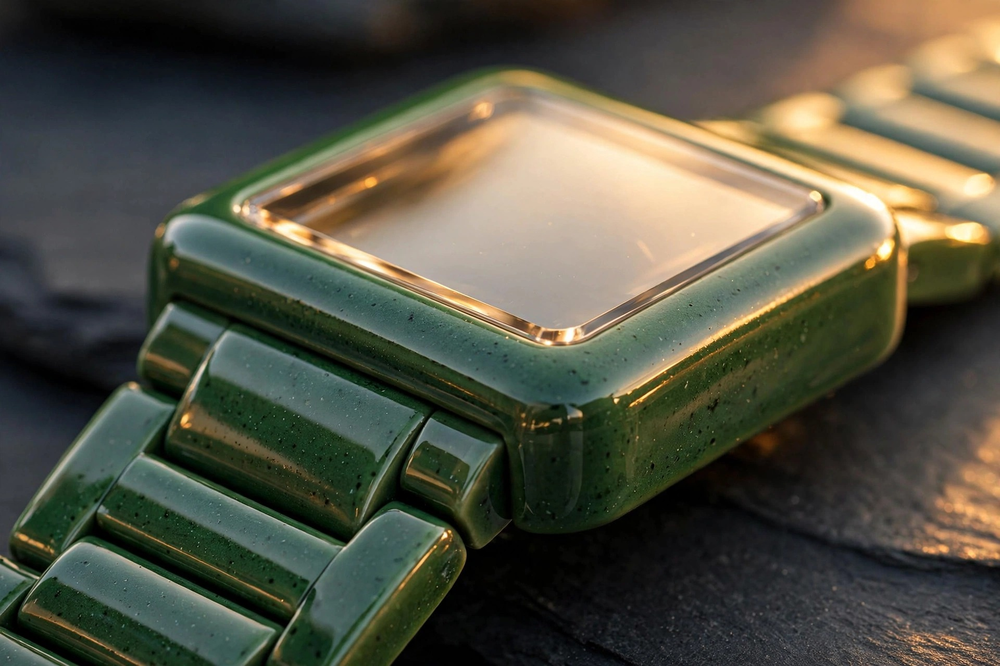

Five Millimeters of Ceramic: How Rado Injection-Molded a Monobloc Watch Case

Rado has been calling itself Master of Materials since before that tagline meant anything to anyone else, and for once the marketing actually undersells the manufacturing, because injection-molding a watch case that measures five millimeters thick from zirconium oxide powder that shrinks twenty percent in the oven, holds square corners to ten microns, and still matches its bracelet links in polished green ceramic without a visible parting line is not branding, it is process control at a level most Swiss brands outsource and then pretend they did not.
Five millimeters. Flat.
Put a caliper on a True Square Thinline R27047902 and you get 37.0 mm case width, 43.3 mm length, 5.0 mm thickness, 86.7 grams on the wrist with full ceramic bracelet, pressed titanium caseback, flat sapphire crystal with no bevel, high-tech ceramic crown that is actually ceramic instead of steel painted to look like ceramic, and a three-fold titanium clasp hidden inside the bracelet so the whole thing reads as one continuous loop of polished green.
That is absurdly thin for ceramic. Ceramic hates thin.
From Pressing to Injection: Why Monobloc Matters
Rado launched Ceramica in 1990, first square ceramic watch in the industry, made by pressing powder into a mold and firing it, which works when your case is two pieces and your tolerance is forgiving, but pressing limits you to simple geometries, constant wall thickness, and a dial opening that must be machined after sintering because the press cannot hold a clean square hole without cracking, so every Ceramica case started as a block and became a case through grinding, a subtractive process that wastes material and introduces stress risers at every corner.
2011 changed the method. Rado began injection-molding high-tech ceramic, a process borrowed from technical ceramics for femoral heads and cutting tools, where zirconium oxide powder stabilized with yttria, mixed with a thermoplastic binder to form feedstock, injected at 140 to 180 degrees Celsius into a steel mold that is cut twenty percent oversize to account for sintering shrinkage, then debound in a solvent and thermal cycle that removes the binder without collapsing the green body, then sintered at about 1,450 degrees Celsius until the particles fuse into a dense polycrystal that started beige and only becomes black, white, plasma grey, or green after a second oven where specific gases activate the final color, a two-stage color activation that explains why Rado can do polished green R27047902 with green mother-of-pearl dial and yellow lacquered hands, black with turquoise R27054152, black with sun-orange R27054162, and every link matches because every link went through the same ovens together.
Monobloc means the middle case is one piece. No bezel ring, no separate lugs glued or screwed on, no caseback ring that adds a millimeter. Injection molding lets Rado build almost every functional detail directly into the ceramic structure: the crown tube, the bracelet attachment undercut, the crystal seat, the caseback recess, all molded to near-net shape, so grinding is finishing not forming, which enlarges the usable dial opening, lets designers specify a flat sapphire instead of a boxed one to save height, and makes a full ceramic bracelet possible where each link is itself injection-molded, tumbled, sintered, and diamond-polished to the same Ra as the case.
Wempe's technical note on True Square calls this out explicitly: the new injection-molding technique made a monobloc case in polished high-tech plasma ceramic that is both light and comfortable to wear while widening the available color range beyond black and white, a capability pressing never offered, and that comfort claim is not fluff, because high-tech ceramic is hypoallergenic, thermo-adaptive to skin temperature within seconds, and 1,200 to 1,400 Vickers hard, which means you can wear it for a decade and the case looks new while a steel watch the same age looks like it fought a parking lot.
Sub-One-Millimetre Quartz: Why R420 Exists
You cannot fit an automatic movement inside five millimeters if you also want a monobloc ceramic case, flat sapphire, pressed titanium caseback, and any water resistance at all, so Rado calibre R420 exists, a Swiss quartz with 13 jewels, less than one millimetre thick, hours and minutes only, no seconds hand, no date window to break the dial symmetry, and that jewel count which seems extravagant for quartz actually makes sense when you realize a 37 mm ceramic bracelet watch that weighs 86.7 grams will be worn daily, bumped, dropped, and expected to keep the gear train aligned for five-year service intervals without the rotor mass to hide friction.
Thirteen jewels support the gear train, reduce friction in the stepping motor transmission, and stabilize the second-reduction wheel that drives the minute hand through a sweep that is technically stepping but at quartz frequency you cannot see the steps, which matters because Rado's green mother-of-pearl dial R27047902 uses yellow lacquered hands and a yellow printed logo that sit 0.4 mm above the dial surface, and any wobble in the hand height reads as cheap, so the jewelled train keeps the hands flat while the titanium caseback presses directly against the movement plate to set the stack height, no movement holder, no plastic spacer, just ceramic, movement, titanium, sapphire, measured to microns so the whole sandwich totals five.
Quartz also solves a ceramic problem that mechanical cannot. Ceramic is an electrical insulator, which is wonderful for scratch resistance and terrible for dissipating shock energy through a metal mainplate, so a mechanical balance staff hitting an endstone inside a ceramic case transmits its impulse into a brittle structure with no ductility to absorb it, whereas quartz with a low-mass gear train and a stepping motor generates orders of magnitude less shock loading, letting the ceramic case be thinner because it does not need to protect a delicate oscillator from its own stiffness, a counterintuitive trade where the less romantic movement enables the more ambitious case.
Why Square, Why Now, Why 86.7 Grams
Rado invented the square ceramic watch in 1990 and has been iterating on that square ever since because squares are harder than rounds in ceramics, which sounds backwards until you try to sinter a square, because a round shrinks uniformly, a square shrinks toward its center of mass and its corners try to pull inward, creating density gradients that show up as sink marks or microcracks if your powder distribution, binder ratio, or sintering profile is off by even a few percent, so holding a square to watchmaking tolerance through a twenty percent shrink is itself a proof of process that most brands would avoid by making a round and calling it efficient.
True Square Thinline succeeds because it does not pretend to be something it is not. No exhibition caseback showing a rotor that would be 3 mm thick alone. No fake automatic weight. No seconds hand trying to hide quartz. Just a polished monobloc square that weighs less than a large egg, sits flat enough to slide under a cuff without catching, and uses its thinness to make the bracelet integration look continuous, which is the whole point of monobloc: when case and bracelet are the same material, same polish, same color, same hardness, the watch stops looking like a head and a strap and starts looking like one object that happens to tell time.
At $2,250 in the United States, R27047902 costs less than a steel Tudor Black Bay and weighs less than half as much while being harder than sapphire's little brother, which reframes the question from why quartz to why not, because if you wanted a mechanical square ceramic you already have True Square Automatic Open Heart at 9.6 mm thick, sapphire display back, skeleton dial, heavier, taller, and mechanically romantic, but if you wanted the thinnest full-ceramic bracelet watch in production, with a dial that catches light like wet paint and a case that will still look wet in ten years, this is it.
Five millimeters of zirconia, two ovens, thirteen jewels, zero visible screws. That is efficient design, not because it is simple, but because it removes everything that was adding thickness until only ceramic and time remain.
Sources
- Rado Official, True Square Thinline R27047902 product page, United States E-shop : 37.0 mm diameter, 5.0 mm thickness, 86.7 g weight, high-tech ceramic case and crown, monobloc construction, flat sapphire crystal, pressed titanium caseback, R420 quartz calibre 13 jewels less than 1 mm thick, polished green ceramic bracelet 3-fold titanium clasp, $2,250 MSRP, five year warranty.
- Rado Press Center, True Square Thinline collection release : Three new editions evoke night allure, polished high-tech ceramic monobloc case and crown on matching ceramic bracelet, Thinline credentials 5.0 mm thick, case dimensions 37 x 43.3 mm, R420 calibre 13 jewels less than 1 mm thick, feat of miniature engineering and materials expertise.
- Wempe Jewelers, Rado True Square technology explainer : First square ceramic watch 1990 Ceramica made by pressing technique, new injection molding technique enables monobloc case in polished high-tech plasma ceramic light and comfortable, wider color range black white plasma, case and bracelet ultra-pure high-tech ceramic scratch-resistant, sustainability angle, square injection-molded monobloc sets new standards.
- Revolution Watch, Celebrating Le Corbusier with the Rado True Square Thinline, 2024 : Injection molding since 2011 allows almost every part built directly into ceramic structure, enlarging dial opening, intricate full ceramic bracelets, transparent sapphire casebacks, color experimentation, ceramic comprising zirconium oxide sintered at 1,450°C initially beige, second oven gases activate color, meticulous compound mixing for color matching across case crown bracelet links.
- Rado Official, True Square Thinline R27054162 and R27054152 Singapore listings : Variant confirmation: R27054162 polished black with sun orange hands and logo, R27054152 polished black with turquoise hands, both 37.0 mm 5.0 mm 86.7 g R420, SGD 2,800 recommended retail, same monobloc architecture.
- Stuff.tv, 13 Unmissable Watches Launched in August, August 2026 : Market context for August 2026 releases, confirms Omega Speedmaster 38mm refresh already covered, frames True Square Thinline class of watches as part of stacked August release window alongside motorsport tie-ins and left-field collaborations, establishes recency for Thinline color editions.